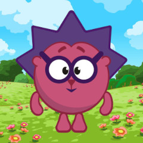

Это карта психосоциотипической совместимости. Смешарики здесь только для наглядного примера. Их позиции соответствуют прописанным характерам. Добавьте на карту себя, своих близких и знакомых, чтобы узнать с какими позитивными эффектами или, наоборот, трудностями вы будете встречаться, взаимодействуя друг с другом; узнать насколько ваши отношения могут быть комфортными и плодотворными; а также научиться замечать, ценить и культивировать ростки гармонии, сглаживая острые углы и противоречия.
Это не игра, не гороскоп, не гадание на кофейной гуще, а квинтэссенция популярной практической психологии. Главное здесь — научиться правильно определять психо- и социотипы. Для того, чтобы помочь вам в этом, мы разработали два быстрых и довольно эффективных теста. Не во всех, но во многих случаях эти тесты справляются со своей задачей на отлично. Убедиться в корректности определения типа можно с помощью специалиста по социо- и психотипированию, либо посредством самостоятельного погружения в этот интересный и полезный предмет.
Посетите страницу разработчика, чтобы узнать о других клёвых инструментах. Упрямый Инглиш, Архимед Против, Прогрессинатор — уже опубликованы, плюс несколько крутейших вещей сейчас в разработке. Ваша поддержка поможет приблизить рождение нового шедевра.
Пытливый, изобретательный, увлекающийся. Интуитивно-логический экстраверт (ИЛЭ) из квадры исследователей. Мотивация: интересные идеи, свобода экспериментов, отсутствие рутины. Недостатки: хаотичен в делах, не доводит начатое до конца.
Мирный, домашний, бережливый. Сенсорно-этический интроверт (СЭИ) из квадры исследователей. Мотивация: гармония, комфорт, отсутствие стресса. Недостатки: избегает ответственности, склонен "плыть по течению".
Энергичный, открытый, заботливый. Этико-сенсорный экстраверт (ЭСЭ) из квадры исследователей. Мотивация: внимание людей, новые впечатления, позитивные эмоции. Недостатки: поспешность в выводах и решениях, зависимость от мнения окружающих.
Логичный, разборчивый, принципиальный. Логико-интуитивный интроверт (ЛИИ) из квадры исследователей. Мотивация: понимание законов мира, справедливость, работа в одиночку. Недостатки: упрямство, неприязнь к необходимости обеспечения быта.
Невозмутимый, восприимчивый, эстетичный. Этико-интуитивный экстраверт (ЭИЭ) из квадры воплотителей. Мотивация: влияние на людей, раскрытие подтекстов, яркие переживания. Недостатки: может манипулировать, слишком погружается в свои эмоции.
Строгий, уверенный, последовательный. Логико-сенсорный интроверт (ЛСИ) из квадры воплотителей. Мотивация: ясные правила, система, надёжность. Недостатки: бывает занудным, не любит импровизацию.
Решительный, упорный, уверенный в себе. Сенсорно-логический экстраверт (СЛЭ) из квадры воплотителей. Мотивация: победа, контроль, действие. Недостатки: может быть грубым, нетерпим к слабостям.
Мечтательный, драматичный, чувственный. Интуитивно-этический интроверт (ИЭИ) из квадры воплотителей. Мотивация: красота, предчувствия, свобода от рамок. Недостатки: оторванность от реальности, непредусмотрительность.
Азартный, деятельный, целеустремленный. Логико-интуитивный экстраверт (ЛИЭ) из квадры оптимизаторов. Мотивация: эффективность, свобода, сложные задачи. Недостатки: бывает резким, игнорирует чувства, хаотичен в быту.
Сдержанный, осмотрительный, постоянный. Этико-сенсорный интроверт (ЭСИ) из квадры оптимизаторов. Мотивация: порядок, мораль, дисциплина. Недостатки: чёрно-белое мышление, склонность к избыточному контролю.
Напористый, дерзкий, амбициозный. Сенсорно-этический экстраверт (СЭЭ) из квадры оптимизаторов. Мотивация: влияние, статус, признание. Недостатки: может быть поверхностным, склонен к манипуляциям.
Отстраненный, скептичный, своенравный. Интуитивно-логический интроверт (ИЛИ) из квадры оптимизаторов. Мотивация: понимание рисков, безопасность, глубина анализа. Недостатки: медлительность, пессимизм, прокрастинация.
Любопытный, подвижный, обходительный. Интуитивно-этический экстраверт (ИЭЭ) из квадры стабилизаторов. Мотивация: отношения, новизна, уникальность. Недостатки: бывает поверхностным и недостаточно искренним.
Практичный, основательный, автономный. Сенсорно-логический интроверт (СЛИ) из квадры стабилизаторов. Мотивация: удобство, отсутствие суеты, конкретные результаты. Недостатки: может казаться холодным, не любит объяснять свои действия.
Собранный, прагматичный, деловой. Логико-сенсорный экстраверт (ЛСЭ) из квадры стабилизаторов. Мотивация: чёткие задачи, результат, стабильность. Недостатки: раздражается от некомпетентности, бывает жёстким.
Мягкий, старательный, вдумчивый. Этико-интуитивный интроверт (ЭИИ) из квадры стабилизаторов. Мотивация: искренность, смыслы, душевный покой. Недостатки: может быть слишком пассивным, застревает в рефлексии.
1. Логика (смыслы) — базовая [функция, в которой человек наиболее компетентен; является основой его личностной идентичности и воспринимается им как наиболее ценная. Человек с избытком проявляет себя в этой области, пренебрегая порой реакцией окружающих].
2. Воля (своеволие) — творческая [достаточно сильная, наиболее гибкая и хорошо осознаваемая функция].
3. Эмоция (чувства) — болевая [самая чувствительная к чужим оценкам, положительным и отрицательным].
4. Фмзика (комфорт) — фоновая [наименее значимая и наименее развитая функция в структуре личности].
Выберите профиль, для которого нужно построить карту отношений.
|  | Я |
По социотипу — 0-100% |
|
|
|
По психотипу — 0-100% |
|
|
|